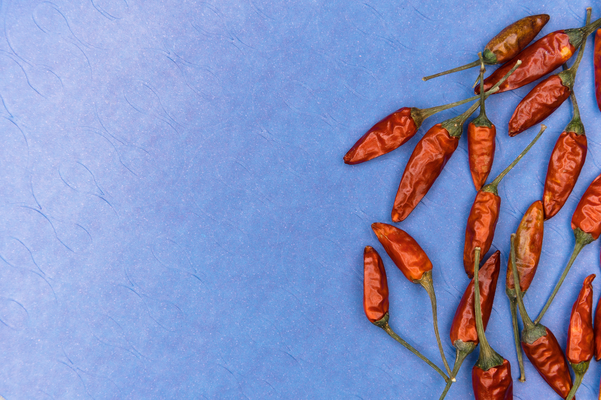
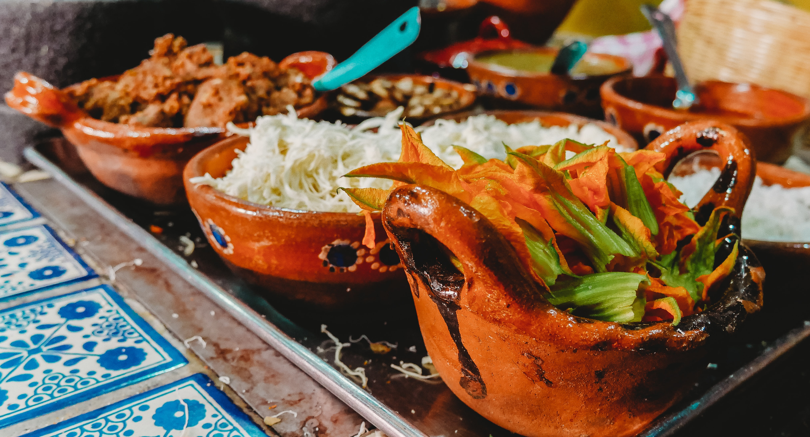

Aquí encontraras información util, ya sea que te guste preparar o solo disfrutar de la comida mexicana.
Registrarse Nuestro objetivo es conectar con miles de personas y que puedan compartir sus propias recetas e inclusive sus recetas familiares, con la finalidad de agrandar la comida tradicional mexicana
